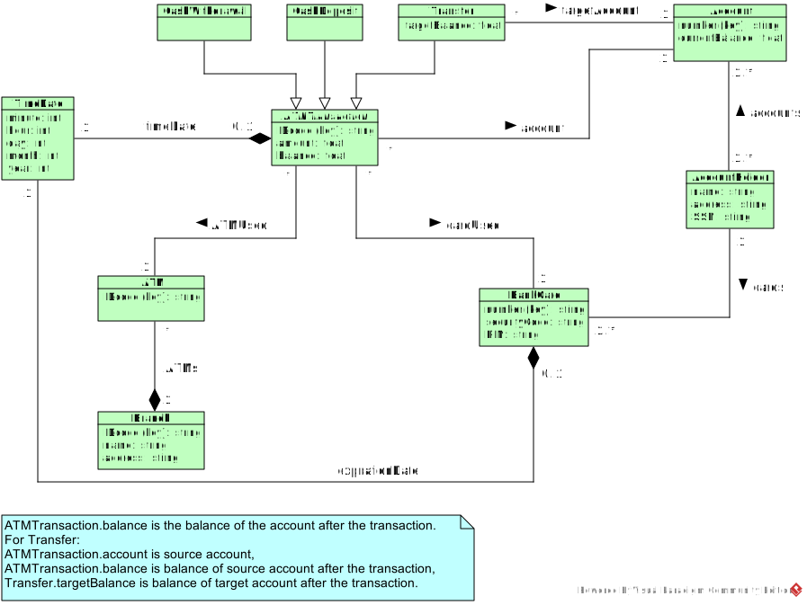

CS 332/780 Project 3 Spring 2018
CS 332/780: Object-Oriented Databases Spring 2018
PROJECT 3: JDO Class Schemas
Due: 04/29/18, Sunday, 11 PM
Use ObjectDB version 2.7.4
for this and next projects
(this seems to be the most recent, stable version).
This project is an exercise in mapping a UML model to JDO class schemas.
First, read
JDO/ObjectDB Tutorial.
Implement the following UML class diagram in JDO.
This is an abridged model of ATM transactions within a single bank.
(mainly due to the fact that the ObjectDB free version supports at most 10 persistent classes).

-
ATMTransaction is an abstract class.
-
The Java classes should use the same class/attribute/relation names used in the above class diagram.
-
Except for those of timeDate and expirationDate,
the inverse relations must be implemented by class fields of suitable names.
-
The inverse relations of account and targetAccount must be implemented by TreeSet<ATMTransaction> and TreeSet<Transfer>, respectively, sorted in reverse chronological order of
the transactions' TimeDate.
Break the tie of TimeDate by ATMTransaction.IDcode.
TreeSet<E>
requires class E to implement
Comparable<E>
or
Comparator<E>
interface by providing, respectively, compareTo or compare function to define a linear ordering.
For two examples of use of TreeSet<E>, see CourseSection and Take classes in the
college example.
The other relations and inverse relations may be implemented by
HashSet<E>.
Next, write a Java class named CreateData whose main function is to create
the objects and the relation instances in the following object diagram.
You might create other objects and relation instances, but this is optional.
It will be helpful to create data by means of constructors in relevant classes.
Running CreateData.main is to create the above data
in the database file named "bank.odb".
Recall that a function call pm.makePersistent(x) is used to store x
as persistent object, and this function call is unnecessary if x is reachable from
an existing persistent object due to the persistence-by-reachability rule.
Note also that all calls to pm.makePersistent(x)
and all operations modifying the database file must be enclosed by
pm.currentTransaction().begin() and pm.currentTransaction().commit().
This sample code for the college database might be helpful.
The last phase of the project is as follows:
-
Compile and enhance the Java classes.
In this project, place all the classes in one folder,
the default package.
Persistent classes must include the annotation @javax.jdo.annotations.PersistenceCapable.
The class CreateData will not be transformed into a persistent class and so
should not include the annotation.
-
Run CreateData.main to create data in the file "bank.odb".
You can view the contents of the file by ObjectDB Explorer, which
should be in the bin folder of ObjectDB, for example C:\Program Files\objectdb\bin.
Submission
The due date is 04/29/18, Sunday, 11 PM.
Email the following material to keitaro.yukawa@gmail.com using the subject header
CS 332 or CS 780, Project 3, Your Full Name(s):
the Java source classes (those with .java extension) including CreateData.java
You may email the entire material in a .zip or .rar compressed file.
Before sending your project package, double check no classes are missing.